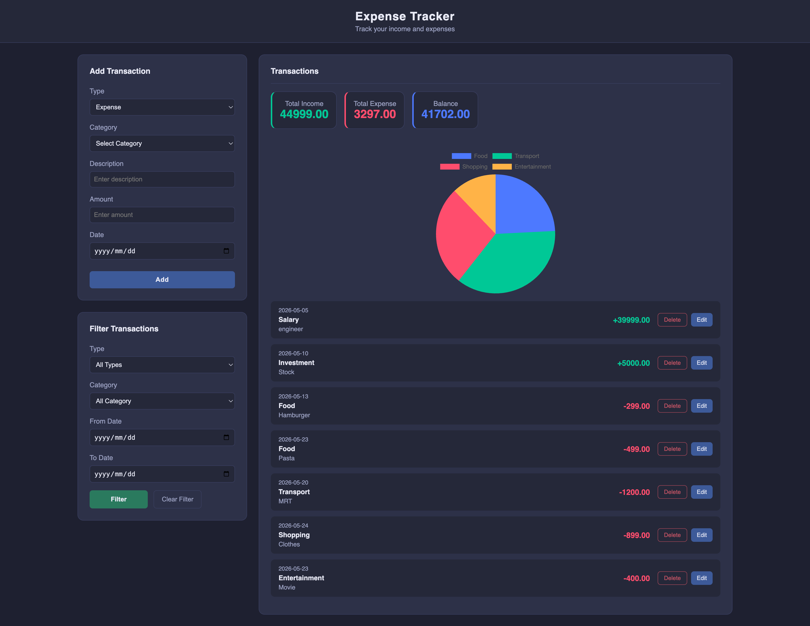

💰 記帳 App

個人財務管理應用，支援收入與支出紀錄、多重條件篩選、統計分析與圖表視覺化。 專注於資料轉換、統計計算與使用者互動設計。
為什麼做這個專案？
在完成 DOM 操作與 API 串接相關專案後， 希望進一步練習前端應用中常見的資料處理情境。 記帳 App 涉及大量統計計算、條件篩選與資料轉換， 是練習 JavaScript 陣列方法與資料視覺化的理想專案。
- 資料轉換將原始記錄整理成統計結果與圖表資料
- reduce 應用進行加總、分類統計與彙總運算
- 多重篩選：組合多個條件動態過濾資料
- 資料視覺化：利用圖表提升資料可讀性
- CRUD 流程：建立完整的新增、修改與刪除操作
- 表單驗證：確保輸入資料正確性
主要功能
- 編輯與刪除既有資料
- 總收入、總支出與餘額統計
- 依類型、分類與日期區間篩選資料
- 圓餅圖呈現支出分類比例
- 表單驗證與錯誤提示
- localStorage 資料持久化
技術決策
使用 reduce 進行資料統計
記帳資料本質上是一組交易紀錄， 而統計資訊（總收入、總支出、分類比例）都是從這些原始資料衍生而來。 因此選擇使用 reduce 作為主要的聚合工具， 讓統計邏輯保持集中且容易維護
const totalIncome = records
.filter(record => record.type === 'income')
.reduce((sum, record) => sum + record.amount, 0);
Chart.js 視覺化資料
單純顯示數字雖能提通資訊， 但不容易快速理解支出結構。 因此使用 Chart.js 將統計結果轉換為圖表， 讓使用者能更直觀地觀察消費分布與支出比例。
原地編輯（Inline Editing）
修改資料時不使用彈窗， 而是直接在列表中切換為編輯模式。 這種操作方式能減少操作步驟， 保持使用者的操作上下文， 提升整體使用者體驗。
挑戰與解決方案
1. 多重條件篩選
問題： 使用者可能同時依照類型、分類與日期區間進行篩選。 若每個條件獨立處理， 很容易產生重複邏輯與維護成本
解決： 將所有篩選條件集中於同一個過濾流程， 使用 filter 搭配條件判斷， 動態組合查詢條件， 保持程式碼一致性。
2. 圖表更新與同步
問題： 當資料新增、刪除或篩選條件改變時， 圖表內容需要同步更新。 若直接建立新圖表， 容易造成記憶體浪費與重複渲染。
解決： 更新前先銷毀既有 Chart 實例， 再重新建立圖表， 確保畫面與資料保持一致。
未來改進方向
- 使用 Date 物件統一處理日期與時區問題
- 加入 CSV、PDF 匯出功能
- 增加月度與年度趨勢圖表
- 支援多幣種與匯率轉換
- 加入預算設定與超支提醒功能